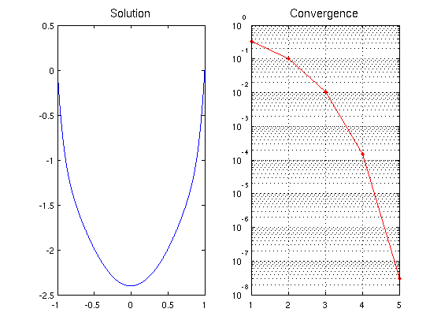
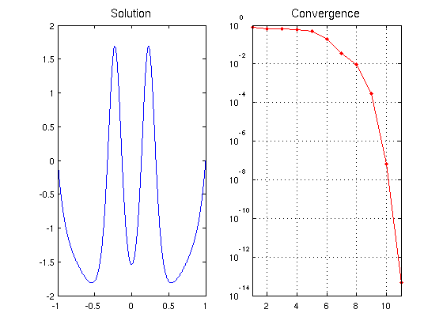
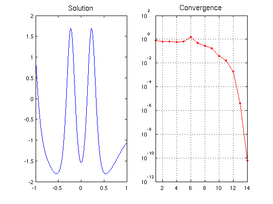

Carrier equation
Asgeir Birkisson, October 2010
Contents
(Chebfun example ode/Carrier.m)
1. The original problem
The Carrier equation can be found in Section 9.7 of the well-known textbook of Bender & Orszag 1978, and is given as follows:
eps u" + 2(1-x^2)u + u^2 = 1, u(-1) = 0, u(1) = 0.
This is a nonlinear ODE BVP with multiple solutions. We can find a solution with Chebfun (taking eps = 0.01) as follows. We set up the operator and boundary conditions:
N = chebop(-1,1);
N.op = @(x,u) 0.01*diff(u,2) + 2*(1-x.^2).*u + u.^2;
N.bc = 'dirichlet';
And we set an initial guess:
x = chebfun('x');
N.init = 2*(x.^2-1);
We now solve the problem using the nonlinear backslash operator. By calling \ with two output arguments, we also get the norms of the updates at each iteration returned in a vector. Before solving the problem, we set the cheboppref 'display' to be 'iter' in order to display information about the solution process. We then plot the solution and the norm of the updates:
cheboppref('display','iter') [u nrmdu] = N\1; LW = 'linewidth'; MS = 'markersize'; FS = 'fontsize'; subplot(1,2,1), plot(u,LW,1.6), title('Solution',FS,14) subplot(1,2,2), semilogy(nrmdu,'.-r',LW,1.6,MS,16), title('Convergence',FS,14) xlim([1 length(nrmdu)]), grid on
Iter. || update || length(update) stepsize length(u)
---------------------------------------------------------------------------
1 3.342e-01 39 1 39
2 9.869e-02 59 1 59
3 1.060e-02 59 1 59
4 1.458e-04 59 1 59
5 2.966e-08 51 1 59
5 iterations
Final residual norm: 4.03e-14 (interior) and 4.41e-23 (boundary conditions).
 The solution has been obtained to high accuracy:
accuracy = norm(N(u)-1)
accuracy =
1.083874138272800e-13
Running from a different initial guess gives a different solution:
N.init = 2*(x.^2-1).*(1-2./(1+20*x.^2)); cheboppref('display','off') [u nrmdu] = N\1; subplot(1,2,1), plot(u,LW,1.6), title('Solution',FS,14) subplot(1,2,2), semilogy(nrmdu,'.-r',LW,1.6,MS,16), title('Convergence',FS,14) xlim([1 length(nrmdu)]), grid on accuracy = norm(N(u)-1)
accuracy =
3.191288707301407e-06
 2. Alternative boundary conditions
If we want to change the BVP above to impose different boundary conditions, we can reuse the chebop created and only change the relevant fields. For example, suppose we want to solve the same equation with the new boundary conditions
u(-1) = 1, u'(1) + u(1) = 0.
We can execute the following commands:
N.lbc = 1; N.rbc = @(u) diff(u) + u; [u nrmdu] = N\1; subplot(1,2,1), plot(u,LW,1.6), title('Solution',FS,14) subplot(1,2,2), semilogy(nrmdu,'.-r',LW,1.6,MS,16), title('Convergence',FS,14) xlim([1 length(nrmdu)]), grid on accuracy = norm(N(u)-1)
accuracy =
6.577582279759786e-08
 This example can also be found among the Sclar BVP demos in CHEBGUI.
Reference:
C. Bender and S. A. Orzsag, Advanced Mathematical Methods for Scientists and Engineers, McGraw-Hill, 1978 (Sectin 9.7).